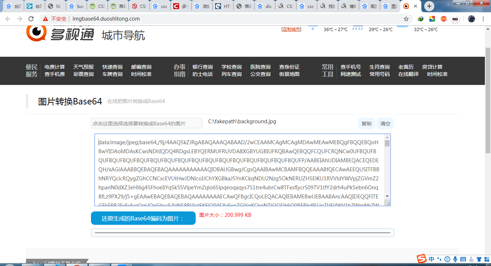

最近博客背景图片的外链挂了，没办法，只好另找办法。
在博客园后台，有一个“文件”菜单，可以上传自己的文件，我就打算把图片传到里面。但却发现了一个很反人性的设置：不允许上传jpg，png文件，允许上传的只有bmp，gif这样的图片文件。bmp文件太大，加载都要好几秒，gif文件质量太差，只有256色，不能满足需求。估计这样不让我们传图片，是为了省流量吧。
没办法，只好另辟蹊径。在允许上传的文件菜单里发现可以上传CSS。
首先把文件转成base64编码。百度base64能找到一堆工具：

转换完之后创建一个css文件，写入如下内容：
body{
background-image:url("你的base64字符串");
}插入之后如图所示：
上传这个css到博客园后台的文件菜单：
之后在后台设置的CSS中写入导入命令：
完成，现在你的博客首页就有不依靠外链的背景图片了：